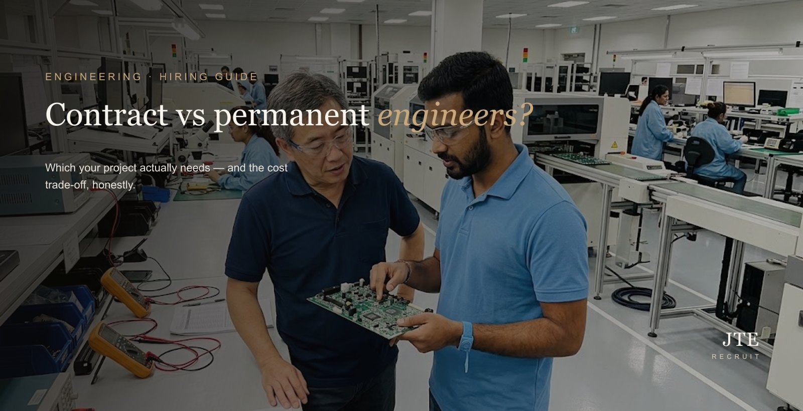

The short answer: hire permanent for ongoing, core engineering work you’ll keep needing; hire contract for a defined project, a workload spike, or a specialist skill you need for a fixed period — or when you need someone now without a long-term commitment. Most teams don’t pick one; they run a permanent core with a contract layer on top. Here’s how to tell which is which.
“Should this be a permanent hire or a contract one?” is one of the most common questions we get from employers — and getting it wrong is expensive in both directions. Hire permanent for a six-month project and you’re carrying the cost long after the work ends; put a core role on rolling contracts and you’ll lose the person the moment something steadier comes along.
It’s not really “contract vs permanent” — it’s “how long, and how core?”
The useful question isn’t which model is better in the abstract — it’s two smaller ones about the actual work. How long will the work last? A finite project points to contract; open-ended points to permanent. How core is it? Work at the centre of what you do — that you’ll keep needing and want to build knowledge around — points to permanent; specialised or peripheral work points to contract. Answer those two and the model usually chooses itself.
When permanent is the right call
- Ongoing core work — the engineering is central and continuous, not a one-off.
- You want the knowledge to stay in-house — institutional memory, not rented expertise that walks out the door.
- Team-building and mentoring — permanent people anchor a team and bring the juniors up.
- The role will evolve — you want someone who grows with the company.
Permanent costs more in commitment — salary, CPF, benefits, and the responsibility of an employee — but for core work that’s exactly the point: someone invested, who stays, and who gets better at your specific problems over time.
When contract makes more sense
- A defined project with an end date.
- A workload spike — you need hands for six months, not forever.
- A specialist skill for a fixed phase — commissioning, a migration, a certification push.
- You need someone now and can’t wait out a permanent hire’s notice period.
- You want to try before you commit — contract-to-perm.
Contract gives you flexibility and speed without a permanent liability. The day rate is higher, but you’re not carrying the person once the work is done, and there’s no retrenchment cost if the project winds down.
The cost trade-off, honestly
On paper a contractor’s day rate looks expensive next to a permanent salary — but it isn’t a like-for-like comparison. A permanent hire’s true cost includes CPF, leave, benefits, and the commitment to keep paying them through quiet periods. A contractor’s rate is all-in and switches off when the work does. Neither is simply “cheaper”: permanent is better value for continuous work, contract for finite work. Our engineering salary guide helps you compare like for like.
There’s also a third option people forget: contract staffing with the payroll handled for you. You get the contractor’s work and a single invoice — we run their salary, CPF and compliance — so you flex your headcount without taking on the admin. (How that works.)
The blend most teams actually run
In practice, the strongest engineering teams aren’t all-permanent or all-contract — they run a permanent core (the people who hold the knowledge and the culture) with a contract layer that flexes up for projects and down when they end. You get stability where you need it and flexibility where you don’t, without over-committing on either.
The mistakes that cost you
- Hiring permanent for a finite project — you carry the cost long after the work is done.
- Putting a core role on rolling contracts — you lose the person, and their knowledge, to the first stable offer.
- Underestimating handover — a contractor who leaves with everything in their head can cost you more than the rate you saved.
- Judging on rate alone — the cheaper option is whichever matches the work, not the smaller number.
How to decide — a quick test
Ask, in order: Is the work finite or ongoing? Is it core or peripheral? Do you need the knowledge to stay in-house? Do you need someone faster than a permanent notice period allows? Your answers point clearly to one model — or, just as often, to a sensible blend of both.
Frequently asked questions
Is contract or permanent cheaper for engineers?
Neither is simply cheaper — it depends on the work. Permanent is better value for continuous, core work; contract is better value for finite work. A contractor’s higher day rate is all-in and stops when the work does, while a permanent salary carries CPF, benefits and the commitment to keep paying through quiet periods.
Can a contract engineer become permanent?
Yes — contract-to-perm is common, and a good way to try before you commit. You bring someone in on contract, then convert them to permanent if the fit and the workload prove out.
Do I pay CPF for a contract engineer in Singapore?
If the engineer is your direct employee, yes. If they’re placed through a contract-staffing arrangement where the agency is the employer of record, the agency handles CPF, IR8A, leave and compliance, and bills you a single invoice.
How long can an engineer stay on contract?
Engineering contracts are commonly 6 to 12 months and can be renewed. If the work turns out to be ongoing and core to your business, that is usually the signal to convert the role to permanent.
Which is better for a hard-to-find specialist?
Often contract, at least to start — a scarce specialist may only be available on contract, and a fixed engagement lets you access the skill for the phase you need it, without paying a permanent premium. Convert later if the need becomes ongoing.
What is contract staffing with payroll?
You get the contractor’s work; the agency employs and payrolls them (salary, CPF, IR8A, leave, compliance) and bills you one invoice. It is how many SMEs flex their headcount up and down without taking on the payroll admin.
Whether a role should be contract or permanent is exactly the kind of thing we work out with employers before sourcing anyone — and often the answer is a blend. Tell us about the work and we’ll help you structure it. More on engineering recruitment and contract staffing.